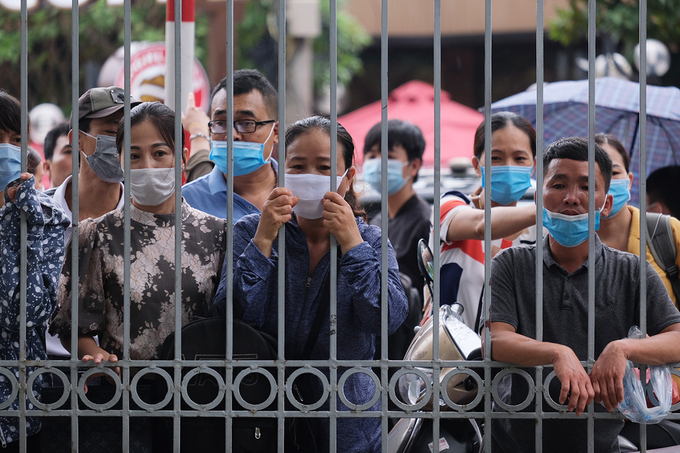

Thí sinh đổ về Hà Nội thi vào trường Bách khoa Chiều 15/8, hơn 5.600 thí sinh có nguyện vọng vào Đại học Bách khoa Hà Nội dự thi bài kiểm tra tư duy để xét tuyển đại học.
Thí sinh dự thi ở hai điểm là Đại học Bách khoa Hà Nội và Đại học Hồng Đức (Thanh Hóa). Trong đó, có 167 phòng thi tại Hà Nội với khoảng 4.800 thí sinh đến từ các tỉnh thành phía Bắc, 27 phòng ở Thanh Hóa dành cho các thí sinh ở miền Trung. Thí sinh sẽ làm bài thi Toán và Đọc hiểu trong 120 phút, hình thức kết hợp trắc nghiệm và tự luận. Đây là lần đầu tiên Đại học Bách khoa Hà Nội tổ chức bài kiểm tra tư duy để tuyển chọn đầu vào. Kết quả bài thi sẽ được cộng với điểm Toán, Lý hoặc Toán, Hóa của kỳ thi tốt nghiệp THPT để xét tuyển đại học (tổ hợp A19 và A20). Trường lấy 30-35% chỉ tiêu theo phương thức xét tuyển này, tức khoảng 2.000-2.400 sinh viên. Phụ huynh đứng ngoài cổng trường đợi con . Ảnh: Dương Tâm.
Hom nay , cup H20.
Ngay mai, giai phuong trinh ax2 + bx + c = 0
Ngay mot, Huy cuoc hen nho rang !